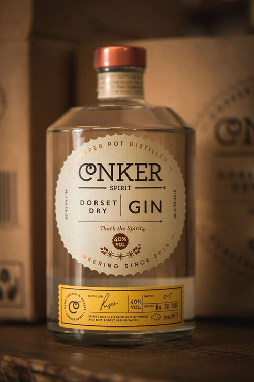

Step into Christ’s on Tuesday 14th June as college comes alive and you fall down a surrealist rabbit hole. Humans become animals, and buildings come alive in an attempt to bring you closer to nature and the otherworldly side of your existence. Expect the natural, but also the more surreal, side of life.
Trust us, it grows on you.
Prepare to be entertained from the moment you join the queue to the moment you depart. This year, Christ's May Ball returns with a bigger and better line-up of acts. We promise to immerse you with a myriad of musical performers and themed entertainment. There will be something for everyone, whether that is: watching the headliner, dancing the night away, or taking a step back and relaxing. You will always have something to do, so prepare to have an unforgettable night. Take a chance and set foot on an unforgettable journey through Christ’s and experience the college coming alive. On your travels through the heart of Christ’s you will be offered an endless array of indulgent food and refreshing drinks to tantalise your taste buds and quench your thirst. From the traditional favourites to the more unusual, there will be plenty of options to satisfy everyone. You won't leave hungry or thirsty.
Christ’s May Ball 2016 is looking for a dedicated and hard-working team to bring our Ball to life. Every single member is vital to the successful running of the Ball, and you will have the opportunity to work with other motivated individuals. There is a wide range of roles available detailed below. For any queries please email Sam Payne.
Applications are open for a waiting list of potential staff members, which will be used on a rolling basis if and when positions become available, click here to apply.
More information about individual roles.
Christ's May Ball would like to extend a very special thank you to Yaz Jung. For more information on Sponsorship please contact yaz.jung@cantab.net
“Money in itself has no value – it’s an unfulfilling and futile motivation for your work. Despite the term ‘working for a living’, your job does not keep you alive and your immediate survival is not in threat if you choose to take another direction.”
Rupert Holloway, Founder, Conker Spirits
When Rupert Holloway first decided to work for himself, he knew it would be a path paved with unknowns that would bring new meaning to his own ideas of work, success and happiness. Free from the constraints of tradition and antiquated expectations, he set about meticulously crafting, sip-by-sip, Conker - Dorset’s first Dry Gin.
“It's up to you to choose the ladders you wish to climb, and it’s likely you won’t pick the right one first time round. The reality is, you’ll be most successful and therefore reap the most rewards, from doing the things that make you happy.”
An intricate blend of ten select botanicals, Conker is a classic gin, led by dry Macedonian juniper heart that subtly incorporates notes of elderberries, samphire and handpicked New Forest Gorse Flowers for a deftly smooth Dorset Dry made to stand up on its own or adored over ice.
It is with sincere pride Christ’s College May Ball brings Conker to Cambridge in celebration of the dedication, resiliency and creative flair of Rupert Holloway, who persevered for years to bring his dream to life.
That’s the Spirit.
Are you interested in sponsoring Christ’s May Ball 2016? We'd love to hear from you; read our sponsorship proposal to learn more.